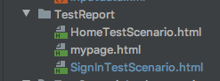
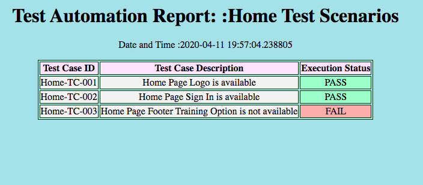

To create stringbuilder instance to append the HTML file
pro_path = Path(__file__).parent
x = str(pro_path).split("TestScenarios")[0] + str("TestReport/")
with open(x + 'HomeTestScenario.html', 'w') as html_file:
TestReport/ This HTML test report will save under this folder in Framework as below.
html_file Initializing HTML stringbuilder.

Before Test Execution creating initial test report
def test_scenarios_execution(self): pro_path = Path(__file__).parent x = str(pro_path).split("TestScenarios")[0] + str("TestReport/") with open(x + 'HomeTestScenario.html', 'w') as html_file: # Create initial test report ReusableTest.initial_html(html_file, "Home Test Scenarios") # Starting execution HomeTestDef.go_to_url(ReusableTest.read_xml("applicationurl")) # Launch The Application HomeTestDef.header_options_validation(self, html_file) # Do Header section validation HomeTestDef.footer_options_validation(self, html_file) # Do Footer section validation # Final report ReusableTest.final_html(html_file)
ReusableTest.initial_html(html_file, "Home Test Scenarios") This line will create initial HTML report to append test execution steps. Code for initial test report is given as below.
@classmethod def initial_html(cls, html_file, title): html_file.write('<html style="background-color:powderblue;">') html_file.write('<body padding-top: "100px";>') html_file.write('<h1 align="center">Test Automation Report: :'+title+'</h1>') html_file.write('<p align="center">Date and Time :' + str(datetime.now()) + '</p>') html_file.write('<table align="center" border="1" bordercolor = "#003300"') html_file.write('</table>') html_file.write('<tr style="background-color:#ffe6ff">' + '<th><center>Test Case ID</center></th>' + '<th><center>Test Case Description</center></th>' + '<th><center>Execution Status</center></th>' + '</tr>')
To append PASS/FAIL steps we can call test as below.
@staticmethod def footer_options_validation(self, htmlreport): try: self.assertEquals("Training Option", Driver.get_element_text(HomePage.training_option())) ReusableTest.when_test_is_pass(htmlreport, "Home-TC-003", "Home Page Footer Training Option is available") except: ReusableTest.when_test_is_fail(htmlreport, "Home-TC-003", "Home Page Footer Training Option is not available")
when_test_is_pass") This method will get call when test is PASS
when_test_is_fail") This method will get call when test is FAIL
This PASS and FAIL methods are written under reusable class as below.
@classmethod def when_test_is_pass(cls, html_string, test_id, test_description): html_string.write('<tr style="background-color:#f2f2f2">'+ '<td><center>'+test_id+'</center></td>' + '<td><center>'+test_description+'</center></td>' + '<td style="background-color:#b3ffcc"><center>PASS</center></td>' + '</tr>') @classmethod def when_test_is_fail(cls,html_string, test_id, test_description): html_string.write('<tr style="background-color:#f2f2f2">' + '<td><center>' + test_id + '</center></td>' + '<td><center>' + test_description + '</center></td>' + '<td style="background-color:#ffb3b3"><center>FAIL</center></td>' + '</tr>')
Finally we need to call HTML closure method as below.
# Final report ReusableTest.final_html(html_file)
This closure method is written under reusable class as below.
@classmethod
def final_html(cls, html_file):
html_file.write('</body>')
html_file.write('</html>')
html_file.close()
After successful execution HTML Test report looks like below.
